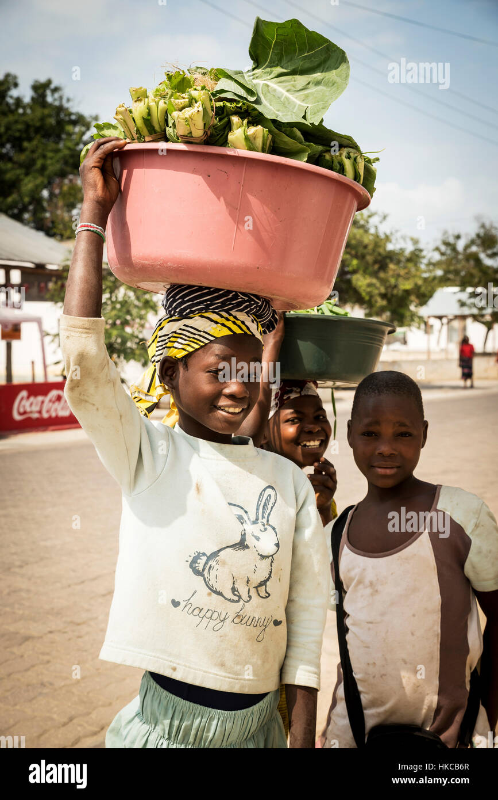

1. We are from Kawempe, Kampala. Every day, We help our mothers to sell fruits and vegetables at the local market. It's hard work, but I love being able to contribute to our family's income. We also enjoy learning about the different types of produce and meeting new people. At the end of the day, I am tired but happy because I know we have done something important.
2. We are from Bwiase Kawempe and we are about 10-12 years old. We live in a small village in Uganda. Our house is made of mud bricks, and we don't have electricity or running water. But we are grateful for what we have. I help my father in the farm, growing yams, corn, and cassava. We also go to school, where we learn to read and write. We all have big dreams for our future, and we believe that with hard work and determination, we can achieve anything.
3. Hi, I am Grace, a 9-year-old girl from Lugoba. I love going to school and learning new things. My favorite subject is math, and I hope to become a teacher one day. But life at home is not always easy. We don't have much money, and sometimes we don't have enough food to eat. But my parents always tell me to never give up and to keep working hard. I know that with their support, I can overcome any obstacle.
.jpeg)